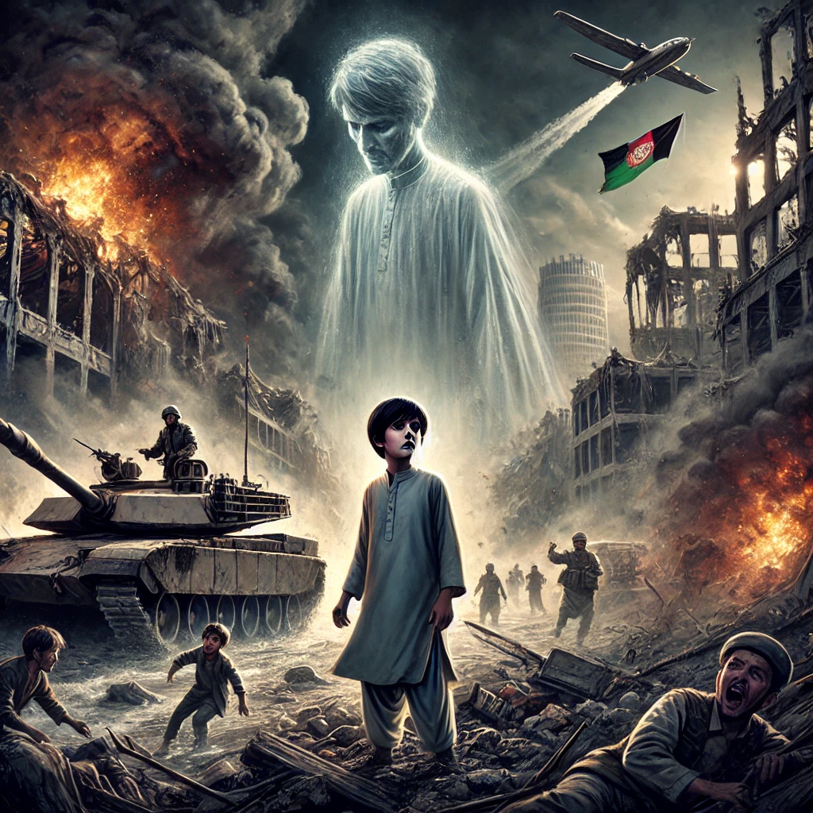

연을 쫓는 아이
목차
작가
할레드 호세이니
출판일
2003년
감상평에 대한 AI그림
아프가니스탄을 주 배경으로 당시 전쟁의 혼란과 공포를 아미르와 함께 경험하며,
그 시대를 살아가는 사람들의 고통을 깊이 느낄 수 있었다.
친구 하산과의 우정, 배신, 그리고 속죄의 과정을 통해 아미르가 성장하는 모습을 보며,
진정한 우정과 용서의 의미를 다시금 생각하게 되었다.
특히 과거의 잘못을 마주하고 바로잡으려는 용기가 얼마나 중요한지 깨닫는 계기가 되었다.

감상평에 대한 AI 감정평가
이 감상문에서 나타나는 감정을 정리하면 다음과 같습니다.
✨ 안타까움과 공감 – 당시 시대를 살아가는 사람들의 아픔에 깊이 공감하는 감정
✨ 우정에 대한 애정과 감동 – 친구 하산과의 우정을 돌아보며 느끼는 따뜻한 감정
✨ 용서와 용기의 중요성을 깨닫는 감정 – 과거의 잘못을 바로잡으려는 용기의 의미를 되새기는 감정
전반적으로 공감, 감동, 그리고 깨달음이 주된 감정으로 나타납니다.